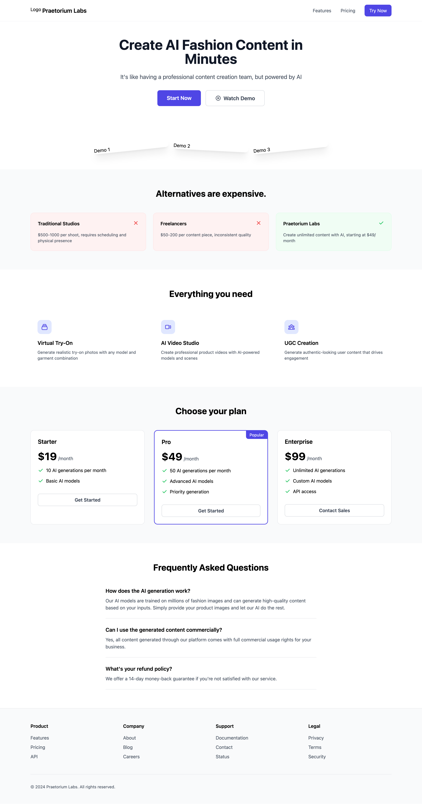
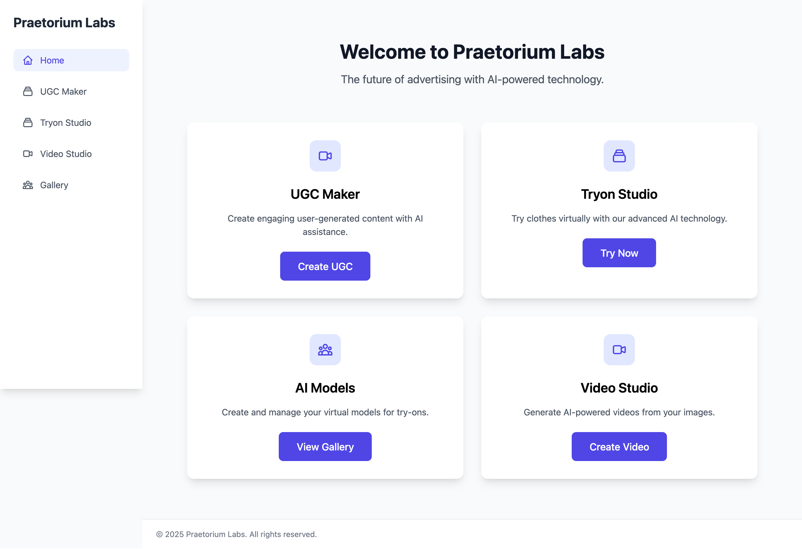
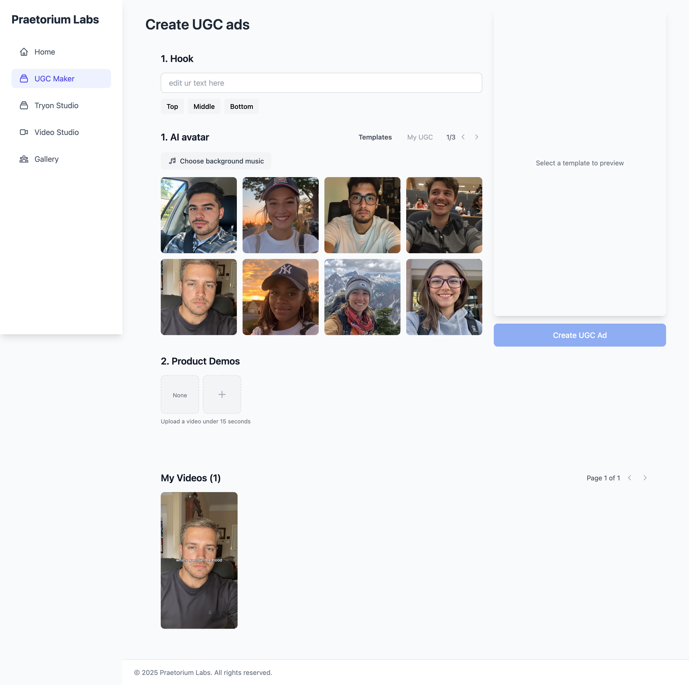
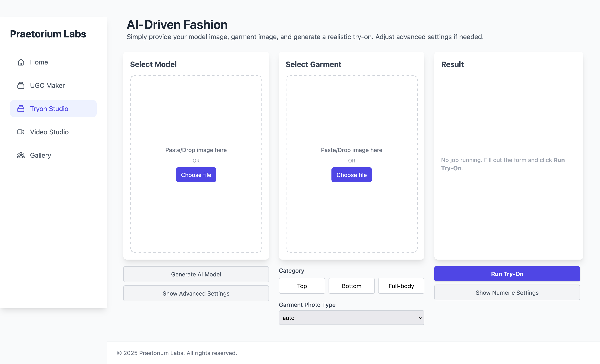
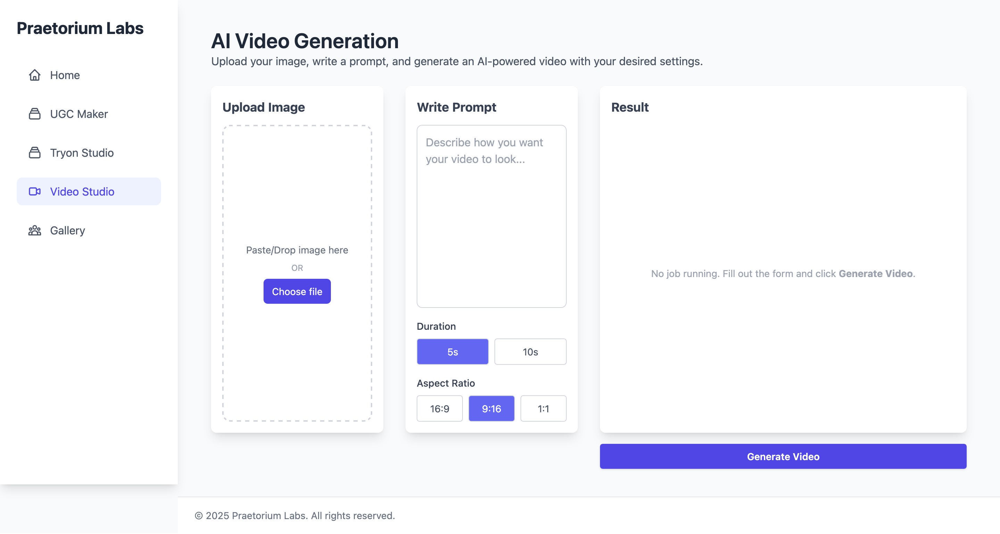
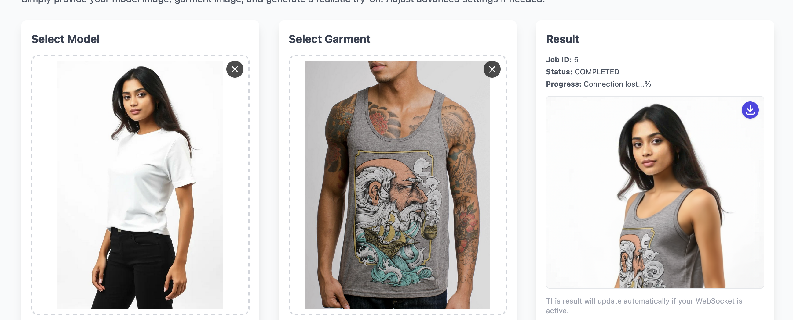

AI UGC, Tryon and Video Gen
A comprehensive AI solution that combines user-generated content management, virtual try-on technology, and automated video generation. The platform enables businesses to create engaging content at scale, offer virtual product trials, and generate professional-quality videos using AI. Features include real-time virtual try-ons, automated video editing, and UGC content management tools.





